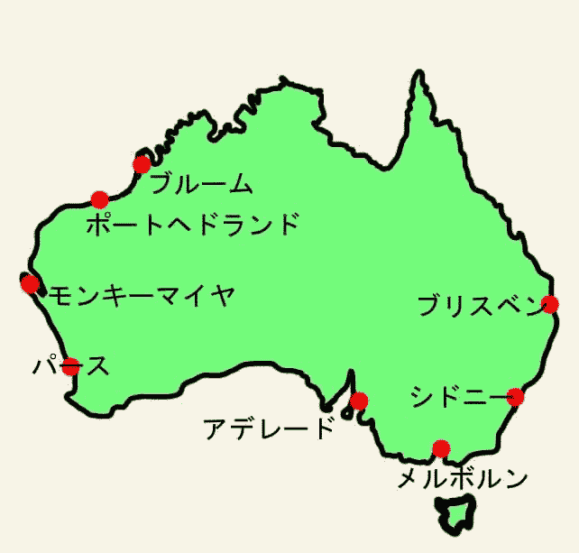
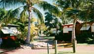

 オーストラリア、ポートヘドランドに赴任している時の話である。ここは先進国に近い国であるから値段を値切るこ とは全く考えていなかった。事務所には赴任当初日本人２人とオーストラリア人（チェコ人）１人である。ある時オ ーストラリア人とブルームのホテル予約の話をしていたら、彼はオフシーズンだから値切ったことがあり、成功して 私が予約する高級ホテルに泊まったようである。彼曰く値切るのは当然であると言っていた。彼はチェコへのソ連侵 攻から逃れてオーストラリアに帰化している、そして何事も自分の身は自分で守るという考え方が染みついている。 そんなだから値切る事も当たり前なのだろうと思いながら、エジプト時代の値切り術が蘇ってきた。でもここはオー ストラリアであるので、発展途上国ほどの値切りは無理と考えた。 さて、日本から持ってきた観光ブックでは１部屋４人泊まれて１泊２８０Ａ＄になっていた。発行は数年前である。 いざ電話して聞いたら１部屋４人泊まれて１泊３３０Ａ＄と言ってきた。「え？高いよ、日本の観光ブックに２５０＄ と書いてあるのに、安くならない？」と言うと、受付の女性はマネージャーと相談していた、マネージャーが電話に 出て何処に書いてあると聞いてきたので、観光ブックの名前と会社名を伝えた。彼はしばらく考えて３００Ａ＄でど うだと言ってきた。ここは発展途上国でもなく特殊な観光地(陸の孤島)に行くのだし、チェコ人はオフシーズンだが 我々はシーズン中であるから、これが妥当と判断し予約をした。住んでいるポートヘドランドからブルームまでは凡そ６００ｋｍある。車にはホテルで自炊できるように飲み水か ら食料を積み込み出発した。途中２００ｋｍ近くは１直線で両側に林が広がっている、景色は全く変わらず２時間弱 うんざりした頃にやっと開けた平原に出た。ブルームまでの所要時間は途中休憩を入れて６時間程であった。 予約したホテルに着いてちょっとびっくり、超高級ホテルである。電話で執拗に値下げ交渉しなくて良かったような 感じがした。レセプションからコッテージまで電動カートで荷物を運んでくれた。飲み水、食料等々ありちょっと気恥 ずかしかった。いざ出発したら他にも日本人家族が居て、電動カートをみたら内と同じように食料を積んでいた。多分 あの家族もオーストラリア国内に赴任していてここに観光で来たのでしょう。彼らとホテル敷地内で会うことはありま せんでした。彼らの荷物を見て少し安心しました。 ２００１年１０月２３日 記
|